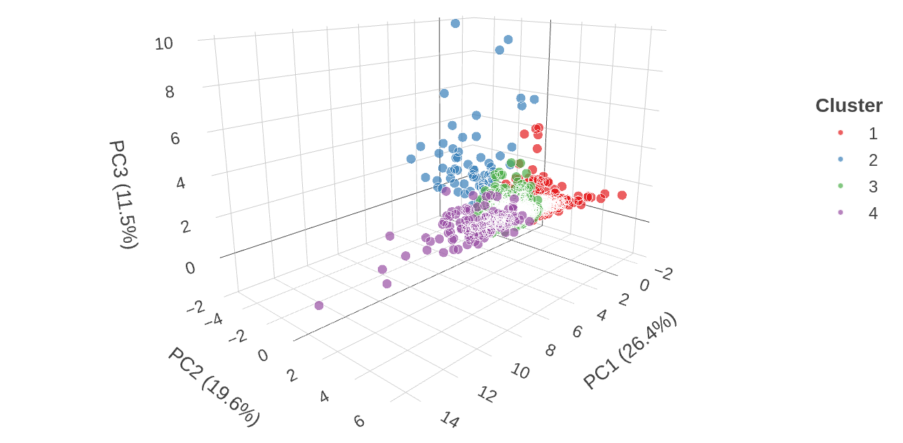
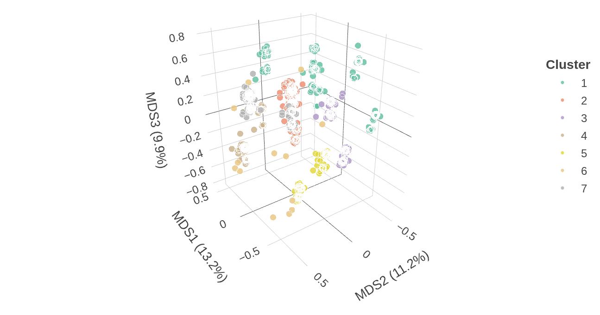

Multivariate Analysis: Second Assignment
Introduction
For this second assignment we continue to work with the data from Inside Airbnb database. This time we compute a two Multidimensional Scaling (MDS) techniques; MDS based on G-Gower distance and Related Metric Scaling (RelMS) and a Cluster analysis.
MDS
In this assignment we compute an MDS based on G-Gower Distance and an MDS configuration called Related Metric Scaling (RelMS). G-Gower distance is a generalization of Gower Distance which helps us compute dissimilarities between mixed data types, allowing us to observe the overall similarity across all variables, giving a broad view of how items relate. RelMS emphasizes certain prespecified relationships or structures in the data while still preserving distances, RelMS highlights specific structures or patterns in the data .
G-Gower and RelMS comparison
Variance Comparison
The Figure 1 shows how much variation is captured by a specific dimension for each method. As we can observe for the first two dimensions G-Gower is able to capture more variation while for the rest of dimensions RelMS is able to capture a little bit more variation. This is because G-Gower is able to capture the more “general” view of the patterns in our data while RelMS capture the more “subtle” details that appear in later dimensions.
Cumulative Variance Comparison
Another way we can observe the performance of both methods in capturing the variation of each dimension is through the Figure 2, which shows the cumulative variance. Even though both models capture a significant amount of cumulative variation (both beyond the 70% threshold), the G-Gower is able to capture a little bit more of cumulative variation than the RelMS.

G-Gower and RelMS correlation with original variables
The following plots allows us to see the correlation between each variable and each MDS dimension computed by both methods.
Correlation Heatmap for G-Gower
We first look at our heatmap for G-Gower Figure 3. The first dimension here separates high-value listings with full amenities from more basic options this is clear because it has a high positive correlation with the variables like: Price, Accommodates, Air Conditioning and Heating. The second dimension presents a higher positive correlation with the variables: Elevator and Air Conditioning and a negative correlation with the Number of Reviews, which are more like secondary features when looking for a house. The third dimension has a high positive correlation with Heating, the rest of the dimensions start showing less correlation between the variables with the dimensions because of the G-Gower distance tendency to give “general” explanations.

We now look at our heatmap for RelMS Figure 4. The first dimension is similar to the one for G-Gower but in this case it gives a higher correlation value to the variable Air Conditioning. The same can be said for the second dimension in which RelMS captures a high correlation for the same variables as G-Gower but in this case it gives a higher correlation value to Elevator. For the next dimensions it captures a bigger amount of correlation between the dimensions and the variables because of its nature to give more specific insights in the data.
Correlation Heatmap for RelMS

Comparison plots for categorical variables
The following section we compute a series of MDS comparison plots between dimension 1 and dimension 2 for a series of variables.
Comparison plot for room_type
The following plot Figure 5, allows us to observe how each type of room correlates with each dimension. But the most interesting part of this plot is that it shows that the G-Gower method points are more separated between them showing its “generalization” nature while the points in RelMS are more compacted providing us a look into its specific nature. A better way this plot shows us the difference nature of both models in when we look at the hotel room data point, which is clearly seen in the RelMS section while in the G-Gower section is hidden behind other point.

Comparison plot for neighbourhood_group_cleansed
The following plot Figure 6, allows us to observe how each neighborhood correlates with each dimension. Here again we see the nature of each model and how G-Gower is able to capture more variation than the RelMS.

Comparison plot for neighbourhood_group_cleansed (Dimensions 1 and 5)
This plot Figure 7, has the same purpose as the previous one, the main difference is that now we compare dimensions 1 and 5. We can now see that for lower dimensions RelMS capture a little bit more of variation which affects the correlation between the variables and the dimensions as we have seen in the previous heatmaps.

Other comparisons


Bootstrap stability analysis
As we did in our previous assignment, we compute a bootstrap stability analysis for our MDS methods.
Eigenvalue stability plot for G-Gower and RelMS
In this figure Figure 8 we can see the same results as we have seen before. While G-Gower captures more variation for the the first two dimensions, showing its efficiency in “packing” the general parts of the data, RelMS is able to capture more variation in later dimensions which shows its capability in finding meaningful structures in the data.

Coefficient of variation plot for G-Gower and RelMS
This plot Figure 9 shows us the reliability of each of the methods. Even though G-Gower captures more variation for the first two dimensions, RelMS is more robust. The increase of the coefficient of variation is due to the fact that as we get further from the more general view of the first dimensions, the dimensions naturally become more unstable.

Clustering
After evaluating the available methods with the data, we chose not to use any of the hierarchical methods due to their poor performance. Instead, we compared PCA versus MDS using only non-hierarchical methods to evaluate their ability to cluster the data.
The average silhouette for each tested configuration can be seen in Figure 10. We utilized PAM (Partitioning Around Medoids) and \(k\)-means as our clustering methods. For each method, we compared the performance of the Euclidean distance against the Mahalanobis distance.

It is important to note that the average silhouette is not a robust metric in isolation; therefore, this plot serves only as a suggestion for which methods might perform better. Nevertheless, PCA with \(k\)-means and Mahalanobis distance appears to be the best approach for a small number of clusters, maintaining its performance as the number of clusters increases. For MDS, performance is initially lower but improves as the number of clusters increases.
Choosing a greater number of clusters comes at the cost of losing explicability, as it becomes more difficult to describe them. Figure 11 shows the Within-Cluster Sum of Squares (WSS) for each configuration, a metric indicating how compact the points are within a cluster.
MDS produces a compact configuration with the Mahalanobis distance and PAM. This aligns with our previous analysis of MDS, where RelMS helped compact the data within clusters. However, the use of Euclidean distance significantly impacts this metric, as shown in the plot. The remaining configurations display similar performance.

Table 1 presents the final evaluation for each configuration with a computed score. This score is derived from the number of clusters, Silhouette width, WSS, Calinski-Harabasz index, and Dunn index. Higher values indicate better clustering performance.
| Space | Method | Distance | k | Silhouette | CH_Index | Dunn_Index | WSS | Score |
|---|---|---|---|---|---|---|---|---|
| PCA | K-means | Euclidean | 4 | 0.2535 | 264.88 | 0.0217 | 4199.12 | 0.7181471 |
| MDS | K-means | Euclidean | 11 | 0.2627 | 137.29 | 0.1152 | 301.69 | 0.7130728 |
| PCA | K-means | Euclidean | 11 | 0.2583 | 247.35 | 0.0251 | 2156.31 | 0.7089065 |
| PCA | K-means | Euclidean | 5 | 0.2588 | 257.05 | 0.0217 | 3712.69 | 0.7043294 |
| PCA | K-means | Euclidean | 10 | 0.2523 | 253.63 | 0.0251 | 2283.66 | 0.7017821 |
| PCA | K-means | Euclidean | 3 | 0.2397 | 264.10 | 0.0168 | 4934.80 | 0.6946470 |
| MDS | K-means | Euclidean | 12 | 0.2587 | 133.97 | 0.1178 | 289.17 | 0.6935491 |
| PCA | K-means | Euclidean | 8 | 0.2434 | 258.87 | 0.0264 | 2670.66 | 0.6931150 |
| PCA | K-means | Euclidean | 7 | 0.2418 | 262.51 | 0.0253 | 2919.07 | 0.6916564 |
| MDS | K-means | Euclidean | 8 | 0.2381 | 141.20 | 0.1342 | 360.89 | 0.6870452 |
| MDS | K-means | Euclidean | 10 | 0.2497 | 137.83 | 0.1127 | 319.78 | 0.6855834 |
| MDS | K-means | Euclidean | 7 | 0.2298 | 146.92 | 0.1342 | 381.66 | 0.6808051 |
| PCA | K-means | Euclidean | 6 | 0.2362 | 261.96 | 0.0191 | 3257.20 | 0.6792026 |
| PCA | K-means | Euclidean | 9 | 0.2465 | 254.29 | 0.0137 | 2472.92 | 0.6751677 |
| MDS | K-means | Euclidean | 9 | 0.2346 | 134.21 | 0.1342 | 345.82 | 0.6649749 |
Based on these results—and considering that a smaller number of clusters is easier to interpret—we selected the following two configurations for comparison:
- PCA with \(k\)-means and Euclidean distance (\(k=4\)).
- MDS with \(k\)-means and Euclidean distance (\(k=7\)).
Since the distance metric and clustering method are equivalent in both selected models, a fairer comparison can be attained.

As demonstrated in Figure 12, PCA produces a clearer clustering structure. PCA benefits from using only numerical data, avoiding the complexity of mixed categorical data. However, categorical data may reveal hidden patterns not visible in purely numerical approaches, representing a trade-off between explicability and completeness. Plotting the data in three dimensions produces a clearer view on how the data is clustered (the added dimension allows for more flexibility and total variance explained). Refer to Figure 13 and Figure 14 for more details on this. The improvement is more significant on MDS than PCA.


| PCA Clustering Characterization (k=4) | ||||||
| N = 1000 observations1,2 | ||||||
| Variable |
Cluster_PCA
|
p-value4 |
Cluster_PCA
|
|||
|---|---|---|---|---|---|---|
| 1 N = 2823 |
2 N = 653 |
3 N = 5193 |
4 N = 1343 |
Overall N = 10003 |
||
| Host Total Listings Count | 4.00 (16.75) | 317.00 (583.00) | 7.00 (28.00) | 10.50 (82.00) | <0.001 | 7.00 (38.00) |
| Neighbourhood Group Cleansed | <0.001 | |||||
| Arganzuela | 12 (4.3%) | 4 (6.2%) | 26 (5.0%) | 9 (6.7%) | 51 (5.1%) | |
| Barajas | 3 (1.1%) | 0 (0.0%) | 3 (0.6%) | 0 (0.0%) | 6 (0.6%) | |
| Carabanchel | 5 (1.8%) | 0 (0.0%) | 29 (5.6%) | 1 (0.7%) | 35 (3.5%) | |
| Centro | 156 (55.3%) | 23 (35.4%) | 207 (39.9%) | 62 (46.3%) | 448 (44.8%) | |
| Chamartín | 5 (1.8%) | 3 (4.6%) | 18 (3.5%) | 7 (5.2%) | 33 (3.3%) | |
| Chamberí | 11 (3.9%) | 9 (13.8%) | 27 (5.2%) | 11 (8.2%) | 58 (5.8%) | |
| Ciudad Lineal | 10 (3.5%) | 0 (0.0%) | 18 (3.5%) | 4 (3.0%) | 32 (3.2%) | |
| Fuencarral - El Pardo | 4 (1.4%) | 0 (0.0%) | 6 (1.2%) | 2 (1.5%) | 12 (1.2%) | |
| Hortaleza | 4 (1.4%) | 1 (1.5%) | 13 (2.5%) | 3 (2.2%) | 21 (2.1%) | |
| Latina | 7 (2.5%) | 0 (0.0%) | 14 (2.7%) | 2 (1.5%) | 23 (2.3%) | |
| Moncloa - Aravaca | 7 (2.5%) | 1 (1.5%) | 12 (2.3%) | 2 (1.5%) | 22 (2.2%) | |
| Moratalaz | 0 (0.0%) | 0 (0.0%) | 5 (1.0%) | 0 (0.0%) | 5 (0.5%) | |
| Puente de Vallecas | 8 (2.8%) | 1 (1.5%) | 21 (4.0%) | 0 (0.0%) | 30 (3.0%) | |
| Retiro | 7 (2.5%) | 7 (10.8%) | 17 (3.3%) | 6 (4.5%) | 37 (3.7%) | |
| Salamanca | 13 (4.6%) | 10 (15.4%) | 30 (5.8%) | 11 (8.2%) | 64 (6.4%) | |
| San Blas - Canillejas | 5 (1.8%) | 0 (0.0%) | 14 (2.7%) | 1 (0.7%) | 20 (2.0%) | |
| Tetuán | 12 (4.3%) | 5 (7.7%) | 39 (7.5%) | 10 (7.5%) | 66 (6.6%) | |
| Usera | 8 (2.8%) | 1 (1.5%) | 10 (1.9%) | 3 (2.2%) | 22 (2.2%) | |
| Vicálvaro | 0 (0.0%) | 0 (0.0%) | 3 (0.6%) | 0 (0.0%) | 3 (0.3%) | |
| Villa de Vallecas | 3 (1.1%) | 0 (0.0%) | 1 (0.2%) | 0 (0.0%) | 4 (0.4%) | |
| Villaverde | 2 (0.7%) | 0 (0.0%) | 6 (1.2%) | 0 (0.0%) | 8 (0.8%) | |
| Room Type | <0.001 | |||||
| Entire home/apt | 212 (75.2%) | 59 (90.8%) | 350 (67.4%) | 130 (97.0%) | 751 (75.1%) | |
| Hotel room | 0 (0.0%) | 0 (0.0%) | 1 (0.2%) | 0 (0.0%) | 1 (0.1%) | |
| Private room | 69 (24.5%) | 6 (9.2%) | 164 (31.6%) | 4 (3.0%) | 243 (24.3%) | |
| Shared room | 1 (0.4%) | 0 (0.0%) | 4 (0.8%) | 0 (0.0%) | 5 (0.5%) | |
| Accommodates | 3.00 (2.00) | 3.00 (2.00) | 2.00 (2.00) | 6.00 (2.00) | <0.001 | 3.00 (2.00) |
| Bathrooms | 1.00 (0.00) | 1.00 (1.00) | 1.00 (0.00) | 2.00 (0.00) | <0.001 | 1.00 (0.00) |
| Bedrooms | 1.00 (0.00) | 1.00 (1.00) | 1.00 (0.00) | 3.00 (1.00) | <0.001 | 1.00 (1.00) |
| Price | 104.00 (72.50) | 104.00 (86.00) | 101.00 (76.50) | 213.00 (126.50) | <0.001 | 112.00 (91.25) |
| Minimum Nights | 2.00 (2.00) | 30.00 (30.00) | 1.00 (2.00) | 1.00 (2.00) | <0.001 | 2.00 (2.00) |
| Number Of Reviews | 121.50 (130.75) | 2.00 (2.00) | 14.00 (28.00) | 41.50 (96.50) | <0.001 | 27.00 (77.00) |
| Estimated Occupancy L365d | 255.00 (33.00) | 18.00 (62.00) | 54.00 (84.00) | 99.00 (167.00) | <0.001 | 96.00 (192.00) |
| Review Scores Value | 4.71 (0.22) | 4.00 (2.33) | 4.61 (0.47) | 4.63 (0.26) | <0.001 | 4.64 (0.39) |
| Host Age Years | 9.02 (4.51) | 4.05 (3.06) | 5.90 (6.57) | 6.34 (5.76) | <0.001 | 6.68 (6.20) |
| Air Conditioning | 109 (38.7%) | 54 (83.1%) | 317 (61.1%) | 88 (65.7%) | <0.001 | 568 (56.8%) |
| Elevator | 153 (54.3%) | 31 (47.7%) | 205 (39.5%) | 73 (54.5%) | <0.001 | 462 (46.2%) |
| Heating | 147 (52.1%) | 50 (76.9%) | 295 (56.8%) | 91 (67.9%) | <0.001 | 583 (58.3%) |
| Cluster_MDS | <0.001 | |||||
| 1 | 47 (16.7%) | 3 (4.6%) | 107 (20.6%) | 4 (3.0%) | 161 (16.1%) | |
| 2 | 48 (17.0%) | 26 (40.0%) | 90 (17.3%) | 48 (35.8%) | 212 (21.2%) | |
| 3 | 70 (24.8%) | 2 (3.1%) | 54 (10.4%) | 23 (17.2%) | 149 (14.9%) | |
| 4 | 18 (6.4%) | 6 (9.2%) | 90 (17.3%) | 13 (9.7%) | 127 (12.7%) | |
| 5 | 48 (17.0%) | 1 (1.5%) | 64 (12.3%) | 8 (6.0%) | 121 (12.1%) | |
| 6 | 4 (1.4%) | 10 (15.4%) | 0 (0.0%) | 0 (0.0%) | 14 (1.4%) | |
| 7 | 47 (16.7%) | 17 (26.2%) | 114 (22.0%) | 38 (28.4%) | 216 (21.6%) | |
| 1 Continuous variables: Median (IQR). Test: Kruskal-Wallis. | ||||||
| 2 Categorical variables: N (%). Test: Chi-squared. Bold p < 0.05. | ||||||
| 3 Median (IQR); n (%) | ||||||
| 4 Kruskal-Wallis rank sum test; Pearson’s Chi-squared test | ||||||
| MDS Clustering Characterization (k=8) | |||||||||
| N = 1000 observations1,2 | |||||||||
| Variable |
Cluster_MDS
|
p-value4 |
Cluster_MDS
|
||||||
|---|---|---|---|---|---|---|---|---|---|
| 1 N = 1613 |
2 N = 2123 |
3 N = 1493 |
4 N = 1273 |
5 N = 1213 |
6 N = 143 |
7 N = 2163 |
Overall N = 10003 |
||
| Host Total Listings Count | 5.00 (10.00) | 27.00 (147.25) | 6.00 (27.00) | 5.00 (14.50) | 4.00 (8.00) | 15.50 (42.00) | 11.00 (95.00) | <0.001 | 7.00 (38.00) |
| Neighbourhood Group Cleansed | <0.001 | ||||||||
| Arganzuela | 11 (6.8%) | 13 (6.1%) | 8 (5.4%) | 5 (3.9%) | 5 (4.1%) | 1 (7.1%) | 8 (3.7%) | 51 (5.1%) | |
| Barajas | 1 (0.6%) | 0 (0.0%) | 1 (0.7%) | 1 (0.8%) | 1 (0.8%) | 0 (0.0%) | 2 (0.9%) | 6 (0.6%) | |
| Carabanchel | 11 (6.8%) | 3 (1.4%) | 3 (2.0%) | 7 (5.5%) | 4 (3.3%) | 0 (0.0%) | 7 (3.2%) | 35 (3.5%) | |
| Centro | 53 (32.9%) | 115 (54.2%) | 81 (54.4%) | 44 (34.6%) | 49 (40.5%) | 7 (50.0%) | 99 (45.8%) | 448 (44.8%) | |
| Chamartín | 3 (1.9%) | 9 (4.2%) | 5 (3.4%) | 6 (4.7%) | 2 (1.7%) | 0 (0.0%) | 8 (3.7%) | 33 (3.3%) | |
| Chamberí | 10 (6.2%) | 17 (8.0%) | 10 (6.7%) | 1 (0.8%) | 7 (5.8%) | 0 (0.0%) | 13 (6.0%) | 58 (5.8%) | |
| Ciudad Lineal | 6 (3.7%) | 2 (0.9%) | 2 (1.3%) | 5 (3.9%) | 8 (6.6%) | 0 (0.0%) | 9 (4.2%) | 32 (3.2%) | |
| Fuencarral - El Pardo | 5 (3.1%) | 1 (0.5%) | 0 (0.0%) | 2 (1.6%) | 2 (1.7%) | 0 (0.0%) | 2 (0.9%) | 12 (1.2%) | |
| Hortaleza | 2 (1.2%) | 3 (1.4%) | 6 (4.0%) | 4 (3.1%) | 2 (1.7%) | 0 (0.0%) | 4 (1.9%) | 21 (2.1%) | |
| Latina | 4 (2.5%) | 0 (0.0%) | 1 (0.7%) | 8 (6.3%) | 4 (3.3%) | 0 (0.0%) | 6 (2.8%) | 23 (2.3%) | |
| Moncloa - Aravaca | 4 (2.5%) | 5 (2.4%) | 1 (0.7%) | 2 (1.6%) | 4 (3.3%) | 2 (14.3%) | 4 (1.9%) | 22 (2.2%) | |
| Moratalaz | 1 (0.6%) | 0 (0.0%) | 0 (0.0%) | 1 (0.8%) | 3 (2.5%) | 0 (0.0%) | 0 (0.0%) | 5 (0.5%) | |
| Puente de Vallecas | 7 (4.3%) | 2 (0.9%) | 1 (0.7%) | 7 (5.5%) | 8 (6.6%) | 0 (0.0%) | 5 (2.3%) | 30 (3.0%) | |
| Retiro | 10 (6.2%) | 10 (4.7%) | 0 (0.0%) | 3 (2.4%) | 2 (1.7%) | 2 (14.3%) | 10 (4.6%) | 37 (3.7%) | |
| Salamanca | 10 (6.2%) | 15 (7.1%) | 12 (8.1%) | 5 (3.9%) | 5 (4.1%) | 1 (7.1%) | 16 (7.4%) | 64 (6.4%) | |
| San Blas - Canillejas | 3 (1.9%) | 3 (1.4%) | 3 (2.0%) | 4 (3.1%) | 3 (2.5%) | 0 (0.0%) | 4 (1.9%) | 20 (2.0%) | |
| Tetuán | 10 (6.2%) | 10 (4.7%) | 11 (7.4%) | 14 (11.0%) | 5 (4.1%) | 1 (7.1%) | 15 (6.9%) | 66 (6.6%) | |
| Usera | 6 (3.7%) | 4 (1.9%) | 1 (0.7%) | 5 (3.9%) | 3 (2.5%) | 0 (0.0%) | 3 (1.4%) | 22 (2.2%) | |
| Vicálvaro | 2 (1.2%) | 0 (0.0%) | 0 (0.0%) | 1 (0.8%) | 0 (0.0%) | 0 (0.0%) | 0 (0.0%) | 3 (0.3%) | |
| Villa de Vallecas | 2 (1.2%) | 0 (0.0%) | 0 (0.0%) | 0 (0.0%) | 1 (0.8%) | 0 (0.0%) | 1 (0.5%) | 4 (0.4%) | |
| Villaverde | 0 (0.0%) | 0 (0.0%) | 3 (2.0%) | 2 (1.6%) | 3 (2.5%) | 0 (0.0%) | 0 (0.0%) | 8 (0.8%) | |
| Room Type | <0.001 | ||||||||
| Entire home/apt | 0 (0.0%) | 211 (99.5%) | 147 (98.7%) | 101 (79.5%) | 65 (53.7%) | 12 (85.7%) | 215 (99.5%) | 751 (75.1%) | |
| Hotel room | 0 (0.0%) | 1 (0.5%) | 0 (0.0%) | 0 (0.0%) | 0 (0.0%) | 0 (0.0%) | 0 (0.0%) | 1 (0.1%) | |
| Private room | 161 (100.0%) | 0 (0.0%) | 0 (0.0%) | 25 (19.7%) | 55 (45.5%) | 2 (14.3%) | 0 (0.0%) | 243 (24.3%) | |
| Shared room | 0 (0.0%) | 0 (0.0%) | 2 (1.3%) | 1 (0.8%) | 1 (0.8%) | 0 (0.0%) | 1 (0.5%) | 5 (0.5%) | |
| Accommodates | 2.00 (1.00) | 4.00 (2.00) | 4.00 (3.00) | 3.00 (2.00) | 2.00 (2.00) | 2.00 (1.50) | 4.00 (3.00) | <0.001 | 3.00 (2.00) |
| Bathrooms | 1.00 (0.00) | 1.00 (1.00) | 1.00 (0.50) | 1.00 (0.00) | 1.00 (0.00) | 1.00 (0.00) | 1.00 (0.50) | 0.004 | 1.00 (0.00) |
| Bedrooms | 1.00 (0.00) | 1.00 (1.00) | 1.00 (1.00) | 1.00 (0.00) | 1.00 (0.00) | 1.00 (0.00) | 1.00 (1.00) | <0.001 | 1.00 (1.00) |
| Price | 51.00 (43.00) | 154.00 (83.50) | 132.00 (86.00) | 107.00 (74.00) | 79.00 (68.00) | 60.00 (26.75) | 122.00 (78.25) | <0.001 | 112.00 (91.25) |
| Minimum Nights | 2.00 (2.00) | 1.50 (3.00) | 2.00 (2.00) | 1.00 (1.00) | 2.00 (2.00) | 100.00 (30.00) | 2.00 (2.00) | <0.001 | 2.00 (2.00) |
| Number Of Reviews | 27.00 (65.00) | 23.00 (75.00) | 93.00 (150.00) | 12.00 (27.00) | 36.00 (78.00) | 3.00 (8.50) | 23.00 (69.00) | <0.001 | 27.00 (77.00) |
| Estimated Occupancy L365d | 96.00 (162.00) | 84.00 (168.00) | 186.00 (195.00) | 64.00 (117.00) | 128.00 (213.00) | 255.00 (255.00) | 79.00 (162.00) | <0.001 | 96.00 (192.00) |
| Review Scores Value | 4.74 (0.33) | 4.63 (0.39) | 4.69 (0.26) | 4.60 (0.49) | 4.64 (0.40) | 4.36 (0.96) | 4.58 (0.41) | <0.001 | 4.64 (0.39) |
| Host Age Years | 8.51 (6.51) | 6.03 (5.21) | 8.38 (5.75) | 3.81 (7.15) | 7.09 (7.05) | 6.99 (5.25) | 5.91 (6.39) | <0.001 | 6.68 (6.20) |
| Air Conditioning | 63 (39.1%) | 212 (100.0%) | 0 (0.0%) | 127 (100.0%) | 0 (0.0%) | 8 (57.1%) | 158 (73.1%) | <0.001 | 568 (56.8%) |
| Elevator | 98 (60.9%) | 212 (100.0%) | 149 (100.0%) | 0 (0.0%) | 0 (0.0%) | 3 (21.4%) | 0 (0.0%) | <0.001 | 462 (46.2%) |
| Heating | 111 (68.9%) | 167 (78.8%) | 83 (55.7%) | 0 (0.0%) | 0 (0.0%) | 6 (42.9%) | 216 (100.0%) | <0.001 | 583 (58.3%) |
| Cluster_PCA | <0.001 | ||||||||
| 1 | 47 (29.2%) | 48 (22.6%) | 70 (47.0%) | 18 (14.2%) | 48 (39.7%) | 4 (28.6%) | 47 (21.8%) | 282 (28.2%) | |
| 2 | 3 (1.9%) | 26 (12.3%) | 2 (1.3%) | 6 (4.7%) | 1 (0.8%) | 10 (71.4%) | 17 (7.9%) | 65 (6.5%) | |
| 3 | 107 (66.5%) | 90 (42.5%) | 54 (36.2%) | 90 (70.9%) | 64 (52.9%) | 0 (0.0%) | 114 (52.8%) | 519 (51.9%) | |
| 4 | 4 (2.5%) | 48 (22.6%) | 23 (15.4%) | 13 (10.2%) | 8 (6.6%) | 0 (0.0%) | 38 (17.6%) | 134 (13.4%) | |
| 1 Continuous variables: Median (IQR). Test: Kruskal-Wallis. | |||||||||
| 2 Categorical variables: N (%). Test: Chi-squared. Bold p < 0.05. | |||||||||
| 3 Median (IQR); n (%) | |||||||||
| 4 Kruskal-Wallis rank sum test; Pearson’s Chi-squared test | |||||||||
We conclude this section by analyzing Table 2 and Table 3. The key question is: are the distinct groups meaningful?
Using the PCA table as an example, we observe that the \(p\)-value for each variable is statistically significant. The test performed here to obtain it uses as null hypothesis that the median is identical across all groups (the alternative being, of course, that is not). This indicates significant differences between the groups for these variables.
- Cluster 2 contains hosts with an average of 317 listings (compared to the global median of 7). This suggests the group consists of corporate hosts or property management companies. Interestingly, this group is not distinguished by price, which follows the global trend.
- Cluster 4 has the highest value and is comprised almost entirely of “Entire homes/apartments”.
In the case of MDS, explicability is more challenging due to the higher number of clusters (\(k=7\)). Nevertheless, the clustering is effective, as indicated by the significant \(p\)-values. The strongest differentiator between clusters is Room Type:
- Cluster 1: Exclusively Private Rooms (100%). It is also the cheapest cluster (Median Price: 51 €).
- Clusters 2, 3, and 7: Almost exclusively Entire Homes/Apartments (>98%), representing the premium segment. Clusters 4 and 5: “Mixed” types, suggesting these clusters are grouped by other factors (e.g., location) rather than just privacy.
Similar to the PCA results, Cluster 2 in the MDS analysis likely represents companies, as hosts here have a median of 27 listings (significantly higher than the overall median). This cluster also commands the highest price (154 €).
Conclusions
MDS is a powerful technique when dealing with mixed-type data (numerical and categorical). While PCA is a well-known and widely applied technique, it lacks the flexibility to incorporate categorical variables directly.
However, MDS is often more difficult to explain due to a lack of direct variable association. In PCA, the principal components are linear combinations of the original variables (e.g., “size” or “price”), whereas in MDS, the dimensions represent relative distances, and there is no strict rule of thumb for interpretation.
Moreover, the dimensionality differs: PCA results in as many components as there are variables (columns), whereas MDS can theoretically produce as many dimensions as there are observations minus one (rows), though we typically select a low-dimensional representation.
Ultimately, the choice is a balance between efficiency and generality.
Clustering proves to be a powerful tool for revealing hidden patterns, as seen with the Airbnb listings. The results are significantly dependent on both the chosen distance metric and the clustering technique (recalling that the hierarchical approach was discarded due to poor performance). Additionally, clustering benefits from lower dimensionality, as fewer broad groups are often easier to interpret and operationalize than multiple small, fragmented clusters.